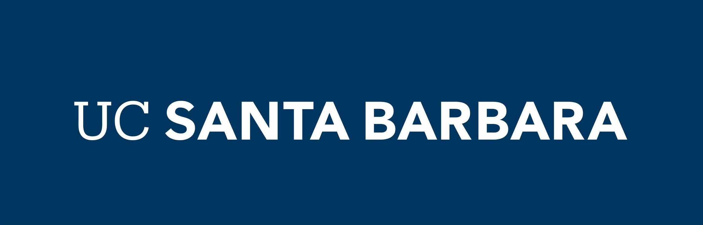

Date: December 3, 2021
UCSB Data Science Summit website: https://datascience.ucsb.edu/summit21
We will be presenting a keynote “Openscapes: Better Science for Future Us” at the 2021 inaugural UCSB Data Science Summit and are excited to learn more with/from the UCSB community!
From the event website:
The Data Science Landscape at UCSB: How do you fit in? Where do we go next?
Data driven science is ubiquitous at the University of California, Santa Barbara (UCSB), but data science efforts on campus remain largely siloed, leaving many on campus wondering “How do I fit in?” Find out where you fit among the data science practitioners, researchers, and educators from across campus. This summit will identify strategies for facilitating an interdisciplinary, collaborative future for data science at UCSB.